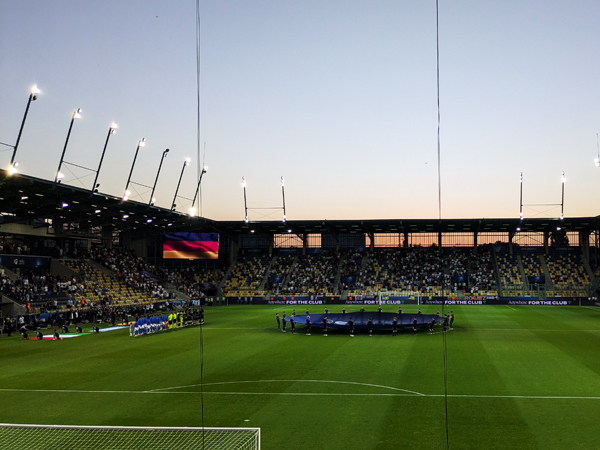
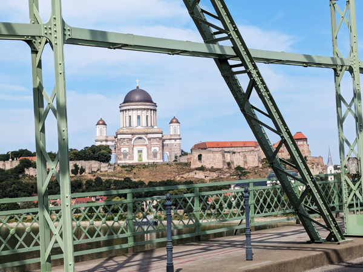

Sunday 22nd June - Germany U21 v Italy U21 Today we were returning to Dunajská Streda. We had bought tickets for both quarter finals when we did not know which one England would be in and although we do not usually go to non-England games, thought we may as well go to this one.
We left our apartment in Tnarva at 10. It was only about 35 minutes to Dunajská Streda but we could not check in until 14:00. When we got there, we carried on past the town until we reached Gabčíkovo where there is a dam and lock across part of the river. We left the car in the car park and cycled six or seven miles until the path became unsurfaced and then turned back.
We drove back to Dunajská Streda and were let into our apartment. There was a bit of confusion as there were two doors with number key pads and the code we had been given did not work. However, by 2:30 it was sorted out and we had parked the car, locked up the bikes and got everything inside.
We were both quite tired after last night so were not bothered about drinking much before the game. I went out for a walk round the ground at 5ish and met Roz back at the restaurant we had eaten in 10 days ago just after 6. We had very good meals again with a few drinks before heading to the ground.

The first half of the game was terrible and I was seriously considering knocking it on the head at half time. However, the second half improved dramatically and was all quite exciting despite not really caring who won. We could have done without it going to extra time but that was quite good as well and all in all, we probably did get our €16s worth!
After the game we went straight back to the apartment.
Monday 22nd June We left the apartment at 9 and headed back to Hungary. We were keen on completing the section of The Danube down to Budapest and had chosen a nice place to stay in Visegrád. Most of the journey was not on motorways so it was quite slow in places but it was all quite pleasant and we arrived in Visegrád just after 11.
We were able to check into our room straight away. We unloaded the car and then went straight out on our bikes. We are staying right on The Danube and first went to look at the ferry times to get across to Nagymaros. We had a wait of about 45 minutes for the next ferry so bought our tickets and then went to buy food for the journey.
We crossed the river and then cycled back up to Štúrovo. A lot of this route was very scenic as we were close to the river but there were also parts where the route was not so obvious. At Szob, the main route crossed back over the river but we did not want to have to wait for another ferry so kept going along the side we were on. This meant a small section where the route was not so well sign-posted and meant a bit of cycling on un-surfaced lanes.

We got to Štúrovo after about 22 miles and had lunch while looking at the Basilica before crossing the bridge back into Hungary. From Esztergom we headed straight back to Visegrád. This route was mainly along the road but it was not too busy so was quite easy to cycle on. I went on ahead of Roz and was going to go back and pick her up with the car but she kept going and got back to Visegrád about 50 minutes after me.
We had a couple of glasses of wine on our balcony before going out to eat. There were not too many options for eating in Visegrád but Don Vito Pizzeria was nearby and a nice place. As we were ordering we got the sad news that Baldy had died. We knew he was in a bad way but this still came as a bit of a shock. We had a few more glasses of wine with a couple of very good pizzas and returned to the room just after 10.
Tuesday 23rd June